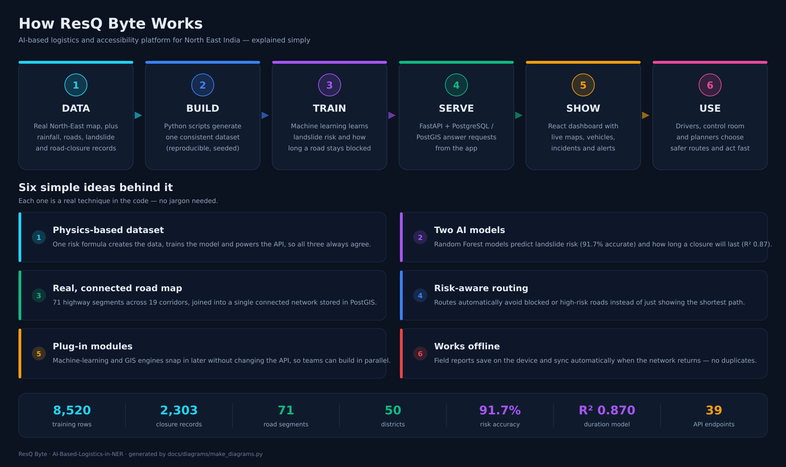
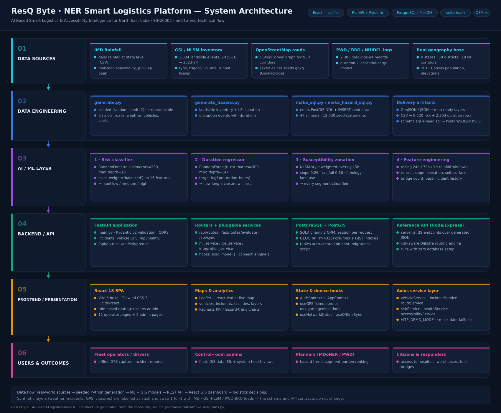
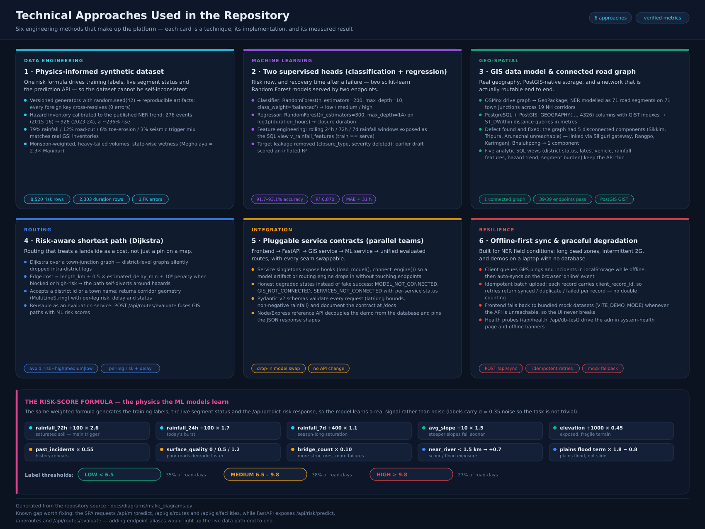

AI-Based Smart Logistics & Accessibility Intelligence for the North Eastern Region (SIH26002) — diagrams generated from the repository source.
One page, plain language: how data flows through the platform and the six ideas behind it.

Six layers, data sources → data engineering → AI/ML → backend API → React frontend → users, with the concrete technology in each layer.

The six engineering methods the repo actually implements, plus the physics-informed risk-score formula that all of them share.

Both diagrams are produced by docs/diagrams/make_diagrams.py — edit the text or boxes there and re-run:
python3 docs/diagrams/make_diagrams.py